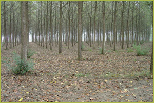
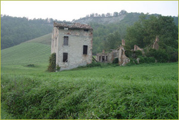
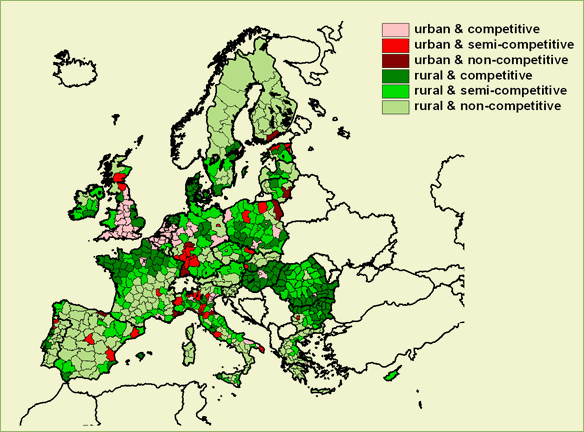

Europe's rural areas will probably show major and rapid changes affecting Profit,
People, Planet (3P). Major threats should be avoided and opportunities grasped.
An anticipative and coordinated policy should be based upon facts, figures and
insights into relationships.
Some examples of policy issues in rural areas:
|  |  | |
| Can Europe produce its own green energy? | How can Europe keep its rural areas alive? |
|  |
| Which EU regions share opportunities? |